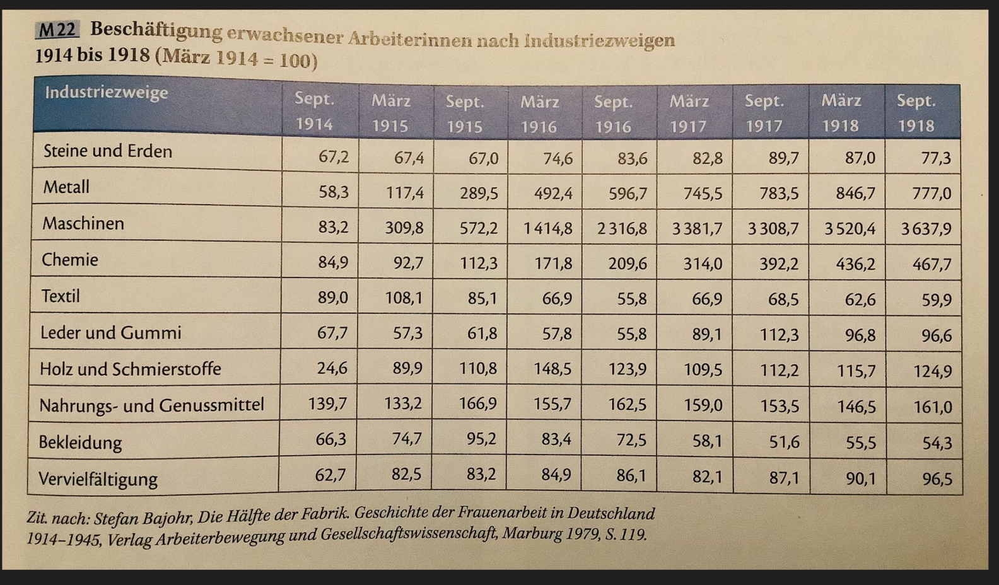
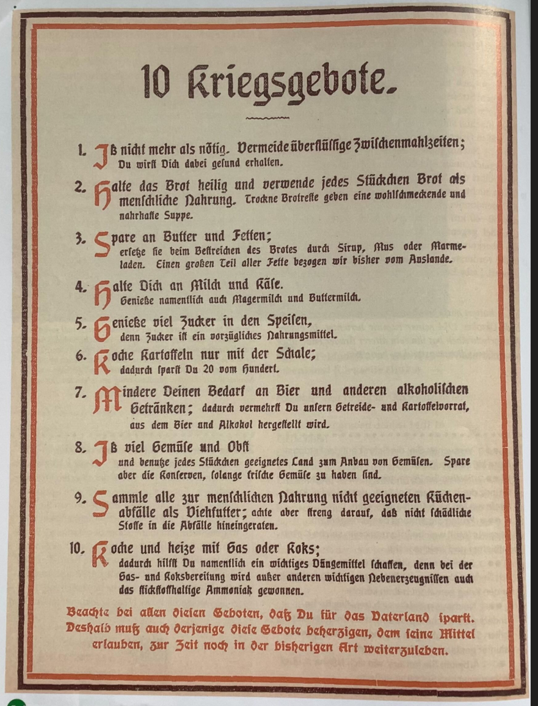

Der Erste Weltkrieg
1914–1918
Til & Justin
⬅️ Zum Start · Nach rechts scrollen ➡️
• Industrialisierter Massenkrieg
• Erster „totaler“ Krieg
• 17 Mio. Tote
⚔️ Westfront
- Stellungskrieg ab Herbst 1914
- Materialschlachten: Verdun (1916), Somme (1916)
- Maschinengewehre, Artillerie, Giftgas
- „Abnutzungskrieg – keine Partei erfolgreich“ (Keegan, M4)
🏭 Industrialisierter Krieg
Frauenarbeit in der Rüstungsindustrie (1914–1918)
Basis März 1914 = 100

- Metallindustrie: 58 (1914) → 847 (1918) – Faktor 14,5
- Maschinenbau: 83 → 3520 – Faktor 42!
- Textilindustrie (Konsum) dagegen: 89 → 63
- Kriegswirtschaft = Boom der Rüstung
Quelle: M22 (Bajohr 1979, S.119)
🏠 Heimatfront: Kriegsgebote

- 1. Nicht mehr essen als nötig
- 2. Brotreste verwerten
- 3. Butter sparen, durch Sirup ersetzen
- 4. Milch und Käse (auch Magermilch)
- 5. Zucker als Nahrungsmittel
- 6. Kaffee mit Schale (20% sparen)
- 7. Weniger Bier/Alkohol
- 8. Gemüse anbauen, Konserven nutzen
- 9. Küchenabfälle als Tierfutter
- 10. Mit Gas/Koks heizen (Düngemittel)
👩 Frauen – „Kriegsgewinnerinnen“?
- Doppelbelastung: Fabrik + Haushalt + Kinder
- „Totale Überanstrengung und Verelendung“ (bpb)
- Lebensmittelknappheit, stundenlanges Anstehen
- 1918 Wahlrecht – aber altes Familienrecht blieb
- Hindenburg (1916): „Frauenarbeit darf nicht überschätzt werden“
- Nachkriegs: Frauen aus Fabriken gedrängt
„Es ist wertlos, weil der wissenschaftliche Gewinn gering ist“
– Hindenburg über Frauenstudium
📰 Medien & Propaganda
Funktionen:
- Mobilisierung, Feindbilder, Moralstärkung
- Legitimation, Kriegsanleihen-Werbung
- Medien: Plakate, Filme, Postkarten, Flugblätter
US-Plakat 1917:
- Gorilla mit „MILITARISM“-Helm
- Keule „KULTUR“ – Barbarei-Vorwurf
- Frau = bedrohte Zivilisation
- Text: „DESTROY THIS MAD BRUTE – ENLIST“
📝 Kriegsberichterstatter Arthur Ruhl
- US-Amerikaner, *1876, Kriegsreporter 1915
- Erlebte Landung auf Gallipoli (Osmanisches Reich)
- „extreme Gefährdung durch Bomben, Artillerie, MG-Feuer“
- „Enge Schützengräben, permanente Gefahr“
Krieg in den Kolonien: Gallipoli 1915 – verlustreiche Landung.
📅 1917 – Epochenjahr
- Russische Revolution → Kriegsaustritt Russlands 1918
- Kriegseintritt USA (April 1917)
- Rücktritt Reichskanzler Bethmann Hollweg
- Osmanen verlieren Palästina
- Langfristig: Aufstieg USA, Nahost-Konflikt, Kommunismus
- Friedensresolution des Reichstags (Juli 1917)
✝️ Kriegsende 1918
- Waffenstillstand 11. November 1918
- 17 Mio. Tote, Verwüstung
- Versailler Vertrag, Kriegsschuldfrage
- Ende der Reiche: Deutschland, Österreich-Ungarn, Osmanisches Reich, Russland
⬅️ Zurück | Ende ➡️